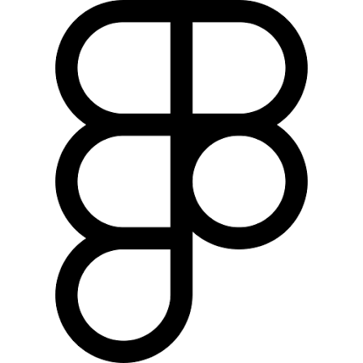
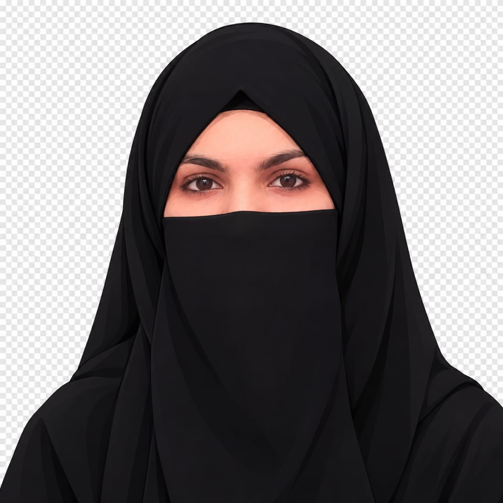
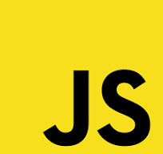
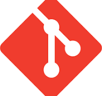

Hi, I'm a Frontend Developer.
I create clean, modern, and responsive websites with a strong focus on design, performance, and user experience. I turn ideas into engaging digital experiences using modern web technologies.


Curious about me? Here you have it
I'm a Frontend Developer who enjoys creating clean, responsive, and user-friendly websites. I work with HTML, CSS, Tailwind CSS, and JavaScript to turn ideas into simple and engaging web experiences. I enjoy learning new things, improving my coding skills, and exploring better ways to build websites. My goal is to create designs that look good, work smoothly, and provide a great experience across different devices.
I also pay attention to the small details that make a website easier to use, from clear layouts to consistent spacing. I’m always looking for opportunities to grow as a developer and build thoughtful digital experiences.
The skills, tools and technologies i am really good at:
 CSS
CSS

JavaScript
Git Figma
Figma
A selection of projects built with clean UI and responsive layouts.
Landing Page
Minimal · Responsive · Modern
Project 3
A modern landing page featuring clean typography, responsive layouts and a simple user interface.
Upwork clone
Freelance Marketplace UI
Project 2
A frontend recreation inspired by Upwork, with navigation, job listing cards and a marketplace-style layout.
Bento Grid
Minimal · Responsive · Modern
Project 1
A creative card-based layout built with CSS Grid, balanced spacing and responsive design.
What next? Feel free to reach out me if you are looking for a developer, have a query, or simply want to connect.